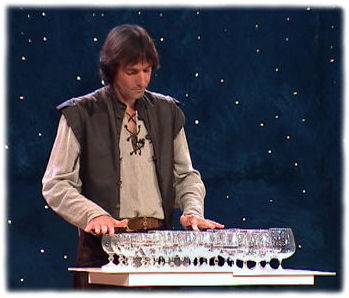

|  -
- Right from his youthful years, Réal was attracted by the beauty and grace of music. He grew up in an environment where every member of his family played a musical instrument. Réal began by practicing on the drums at the age of nine, but his thirst for learning didn't stop there. He went on to learn how to play the family piano and his brother's guitar.
-
- In 1986, Réal became acquainted with an international variety performer, Michel Lauzière. Michel had such an impact on Réal's artistic endeavors that, even today, Réal still considers him one of the most talented, multi-disciplinary and humorists of our time.
-
- They quickly became friends and Réal worked with Michel from 1986 to 1990 as his assistant and property man. He discovered the world of show business during their numerous tours and by working on many U.S. and international stages.
-
- During this period, Michel taught Réal the rudiments of the musical saw. Because of his musical aptitude, Réal learned rapidly and left for Tokyo, Japan, where Michel got him a two-month contract with Disneyland. This was an enjoyable and very fulfilling experience for Réal.
-
- Back to his homeland, Réal practice the art of the musical saw as a public entertainer in the most beautiful sites of the Old-Québec City. With a growing success, he played it for three years. However, he is more fascinated by the celestial sound of the glasses he first heard played by Michel Lauzière. Réal saw the enormous potential that this instrument could offer, and in 1994 he concentrated his efforts on his first glass instrument: the glass harp. He polarized his energies during six months to the intensive rechearch of the ideal glass and crystal cups. By his assiduity that he puts into his work, Réal finally concretizes his researches and finds the adequat chromatic disposition of the cups that he will use from now on. This arrangment is the one that he observes to be the most practical for the playing of his instrument.
-
- In 1995, Réal advanced to another level and acquired technological equipment: computer, sound modulation and music programs, which enable him to fully utilize his musical creativity. With the help of his new equipment, he can now write his own musical adaptations to accompany the music of his glass harp.
-
- Réal continues to progress in the mastery his glassharp, and the love that he gives to his instrument can't be denied. He plays it for love, and for the pleasure of his audience.
-
- In January 2000, Réal Berthiaume joined G.M.I. (Glass Music International). This association brings together musicians who play a wide variety of glass instruments, artists who come from everywhere in the world. Réal met, and became friends with many like-minded musicians from Switzerland to Japan and from Germany to the U.S. Réal was able to exchange ideas and perfect his expertise on glass instruments.
 - [Home - Biography - Discography - Photos Gallery - Informations]
-
|